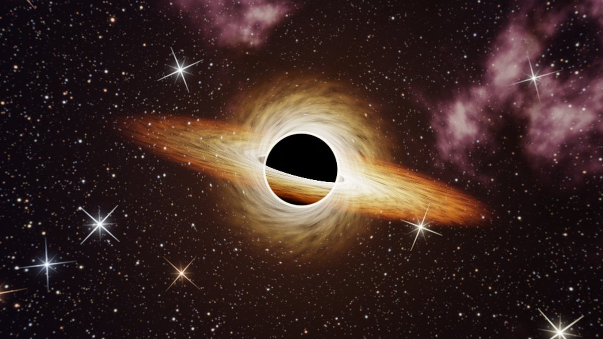
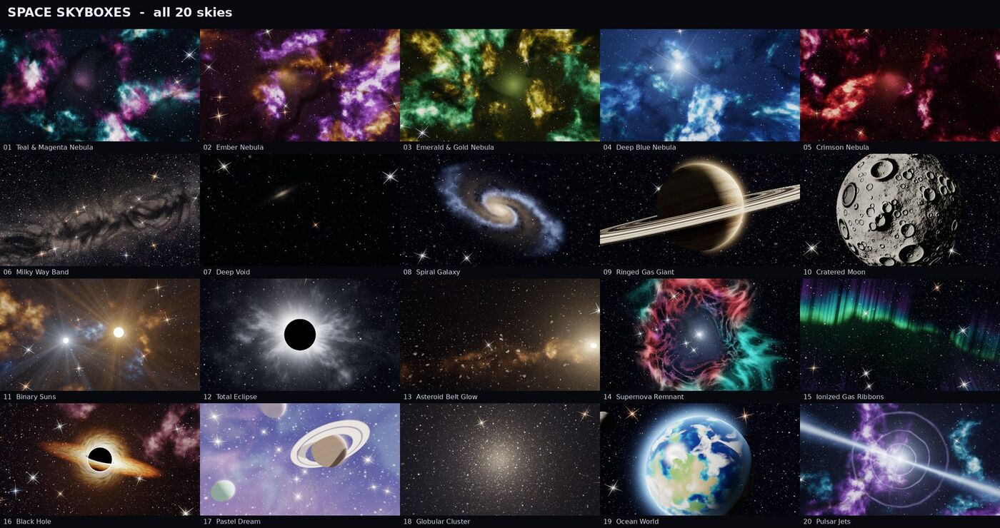

Want something to follow along with? The free Skybox Sampler has six finished skies (nebula, ringed planet, supernova, golden hour, thunderstorm, moonlit night) as six-face sets already named Front, Back, Left, Right, Up, Down for Unity's slots, plus 2048 x 1024 panoramas. Checked in Unity 6: faces line up with no seams, horizon level, sky upright.
On this page
- Option A: Skybox/6 Sided (recommended)
- Import settings that avoid seams
- Assign the skybox and light the scene from it
- Option B: Skybox/Panoramic
- HDRP: Cubemap and the HDRI Sky override
- Change the skybox from a script
- Common problems and fixes
- Ready-made skies
Unity draws the sky with a skybox material set in the scene's Lighting window (or on a camera's Skybox component). The material's shader decides what it reads: Skybox/6 Sided takes six square images, one per cube face; Skybox/Panoramic takes one 2:1 equirectangular image; Skybox/Cubemap takes a Cubemap texture asset; Skybox/Procedural needs no image at all. Built-in and URP use these materials. HDRP does not, and has its own route below.

Option A: Skybox/6 Sided (recommended)
Unity's manual defines the six slots by world axis. Note that the Left slot is the +X face, which is to the right of a default camera; this trips up almost everyone the first time.
| Slot | World direction | File in our packs |
|---|---|---|
| Front | +Z | Front.png |
| Back | -Z | Back.png |
| Left | +X | Left.png |
| Right | -X | Right.png |
| Up | +Y | Up.png |
| Down | -Y | Down.png |
- Copy the six images of one sky into your project, for example
Assets/Skies/Nebula/. - Select all six in the Project window and set the import settings below, then Apply.
- Assets → Create → Material, name it, and set its Shader to
Skybox/6 Sided. - Drag each image into the slot of the same name. If your pack names them differently, use the axis table: the image you see when looking down +Z goes in Front.
- Assign the material in Lighting (next section).
Import settings that avoid seams
With all six images selected, in the Inspector:
- Texture Type: Default. Texture Shape: 2D.
- sRGB (Color Texture): on.
- Wrap Mode: Clamp. This is the one that matters: with Repeat, the filter samples the opposite edge of each face and draws a thin line along every cube edge.
- Generate Mip Maps: off. A sky is always at the same distance, so mips add nothing and can blur the edges.
- Filter Mode: Bilinear.
- Max Size: 1024 or higher (our paid packs are 1024 per face, the sampler 512). Compression: None or High Quality. Low-quality compression bands the smooth gradients in night and sunset skies.
Assign the skybox and light the scene from it
- Open Window → Rendering → Lighting and the Environment tab.
- Set Skybox Material to your new material. The Scene view updates at once.
- For lighting that matches the sky, set Environment Lighting → Source to Skybox, and Environment Reflections → Source to Skybox. Then click Generate Lighting, or tick Auto Generate. Until lighting is generated, objects keep the old ambient colour.
- Add a Directional Light and rotate it toward the sun or moon in the image. The skybox gives the soft fill; the light gives the shadows. In the Lighting window you can also set Sun Source to that light so a procedural sky, if you ever switch to one, draws its disc there.
In URP the same material and the same Lighting window apply. One camera can override the scene skybox with a Skybox component (Add Component → Rendering → Skybox), which is handy for a menu scene that shares a scene file.
Option B: Skybox/Panoramic
One 2:1 image instead of six. Simpler to manage, but a 4096 x 2048 panorama has fewer pixels per degree than six 1024 faces, so it looks a little softer at the same memory.
- Import the panorama with Texture Shape 2D, Wrap Mode Repeat (the image must wrap horizontally), Generate Mip Maps off (mip maps produce a faint vertical line at the left/right seam of lat-long images), Filter Bilinear, Compression None or High Quality, Max Size 4096.
- Create a material with shader
Skybox/Panoramic. Set Mapping to Latitude Longitude Layout and Image Type to 360 Degrees. Assign the image to Spherical (HDR). - Assign the material in Lighting as above. Rotation on this material turns the whole sky, which the 6 Sided shader also offers.
One caveat our packs handle for you: Unity's panoramic shader reads the image mirrored compared with Godot and most HDRI viewers, so a panorama that is correct in Godot shows its sun on the wrong side in Unity. Our packs ship a separate unity_panoramas/ set that is already mirrored and rolled to match the six-face set exactly. For any other panorama, the free skybox converter makes that mirrored copy, and cuts six faces named for the 6 Sided slots, in your browser.
HDRP: Cubemap and the HDRI Sky override
HDRP ignores the skybox material in Lighting. Instead:
- Select the six faces, and in the Inspector set Texture Shape to Cube with Mapping set to 6 Frames Layout (or import a single lat-long panorama with Texture Shape Cube and Mapping Latitude-Longitude, which is simpler). Unity builds a Cubemap asset.
- Add a Volume (global) with a Visual Environment override, set Sky type to HDRI Sky, then add an HDRI Sky override and assign the Cubemap.
- Exposure lives on the HDRI Sky override. Our images are 8-bit sRGB (LDR), so start with an exposure around 0 and adjust by eye; a physical-sky setup expects HDR values and will look dim with LDR images until you raise the exposure.
Change the skybox from a script
The scene's skybox material is RenderSettings.skybox. Swapping it and refreshing the environment lighting takes three lines:
using UnityEngine;
public class SkySwitcher : MonoBehaviour
{
public Material[] skies;
int index;
void Update()
{
if (Input.GetKeyDown(KeyCode.RightArrow))
{
index = (index + 1) % skies.Length;
RenderSettings.skybox = skies[index];
DynamicGI.UpdateEnvironment(); // refresh ambient light and reflections
}
}
}To rotate a 6 Sided or Panoramic sky at runtime, set the material's _Rotation float: RenderSettings.skybox.SetFloat("_Rotation", degrees);. Use a material instance if you do not want the asset itself to change in the editor.
Common problems and fixes
Thin lines along the cube edges
Wrap Mode is Repeat on one or more faces. Set all six to Clamp. If a line remains, turn off mip maps and use Compression None.
Left and right look swapped across the seam with Front
The pack names its faces by direction from the camera rather than by Unity's slot. Swap the images in the Left and Right slots.
The top or bottom looks rotated
Different tools unfold the cube differently. Rotate that single image by 90 degrees in an image editor (try one direction, check the seam with Front, then the other) and reimport. Only Up and Down are affected; the four side faces are never rotated relative to each other.
Sky appears in the Scene view but not in Play mode
The camera's Clear Flags (Built-in) or Background Type (URP) is set to Solid Color. Set it to Skybox. In HDRP, check that the Volume is global and its layer matches the camera's Volume Mask.
Objects stay grey under a colourful sky
Environment Lighting Source is still Color or Gradient, or lighting has not been generated since you changed the skybox. Set Source to Skybox and click Generate Lighting (or call DynamicGI.UpdateEnvironment() at runtime).
Sky too bright or too dark
Use the Exposure slider on the skybox material. The images in our packs are ordinary 8-bit sRGB, not HDR, so exposures near 1 look right in the Built-in pipeline and URP; HDRP needs its own exposure on the HDRI Sky override.
Banding in a night sky or sunset gradient
Texture compression. Set Compression to None (or High Quality) on the sky images and reimport. If the banding is in the final frame rather than the texture, enable dithering in your post-processing or render at HDR.
Ready-made skies for Unity and Godot 4
Every pack ships six-face cubemaps already named for Unity's slots (1024 px per face), a mirrored panorama set for Skybox/Panoramic, plain panoramas for Godot and other engines, and a Godot 4 addon. Royalty-free for commercial and non-commercial projects, no attribution required.

| Pack | Skies | Price |
|---|---|---|
| Skybox Sampler | 6 (two from each paid pack), 512 px faces | Free |
| Space Skyboxes | 20 nebulae, planets, galaxy, eclipse, black hole | $3.99 |
| Stylized Sky Skyboxes | 16 day, sunset, night and storm skies | $3.99 |
| Alien Worlds Skyboxes | 16 exoplanet skies | $3.99 |
Get the free sampler All packs on itch.io
The skies are painted by procedural code written with AI assistance, then checked by eye and by numeric seam tests. No AI image generator is used; every store listing carries the same disclosure. Also see the Godot 4 skybox guide.